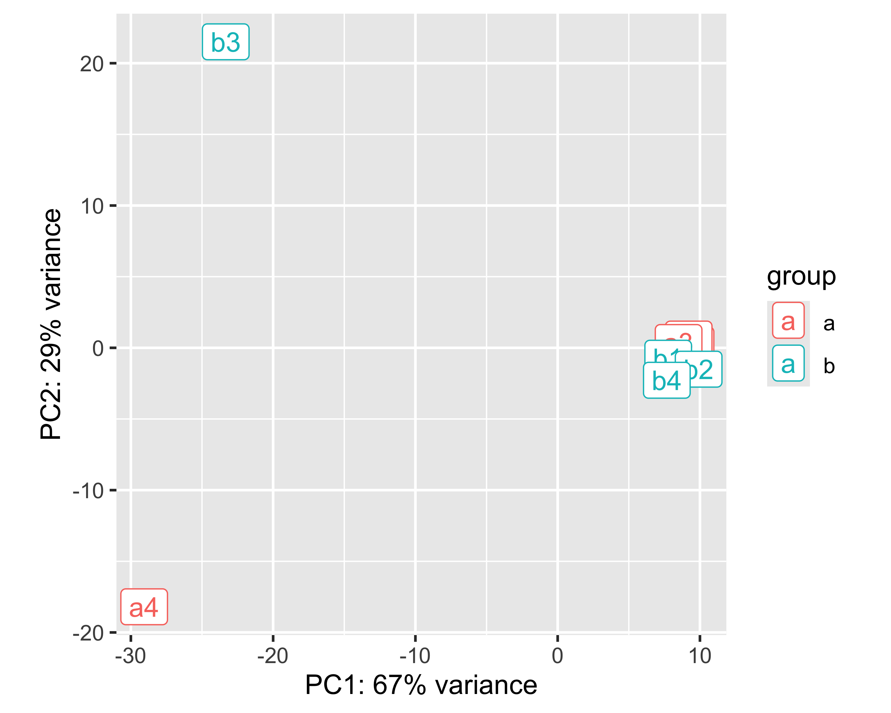
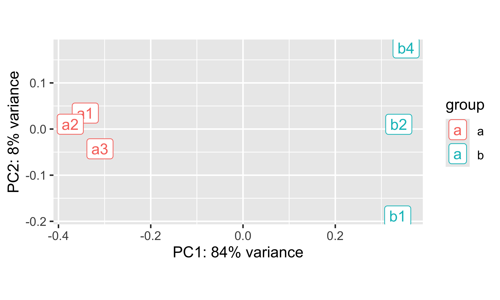
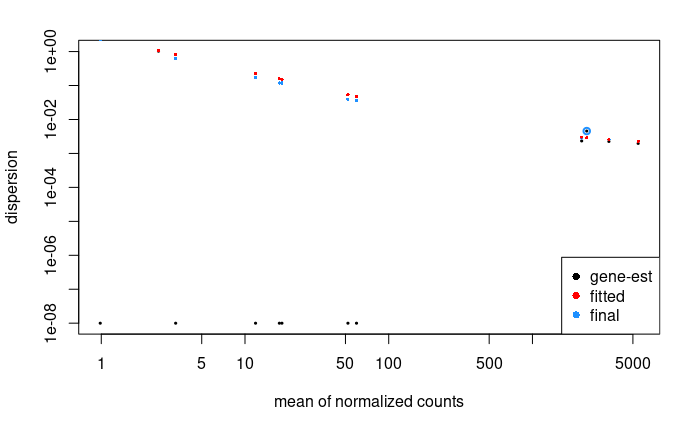
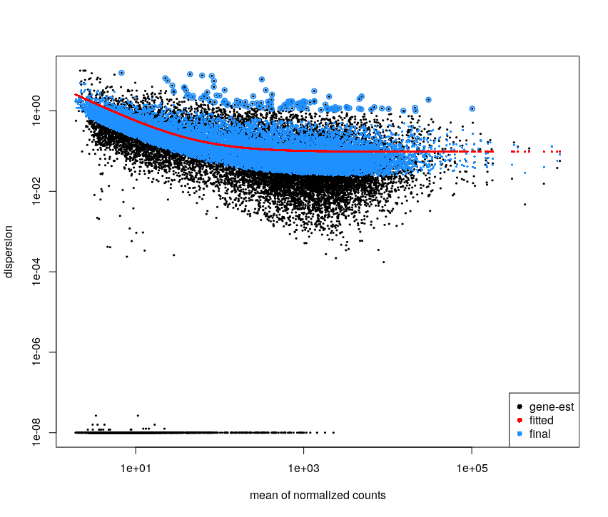
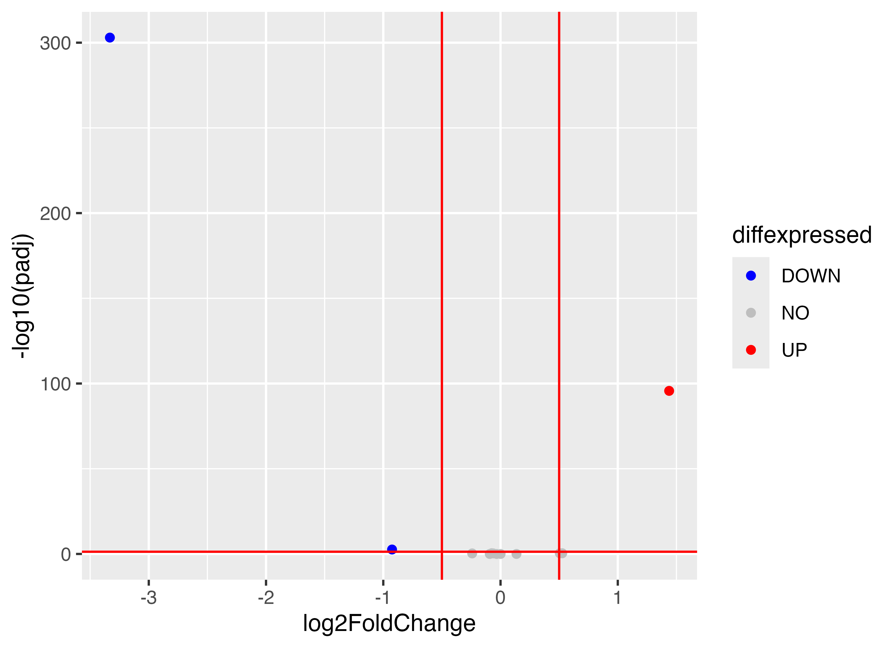
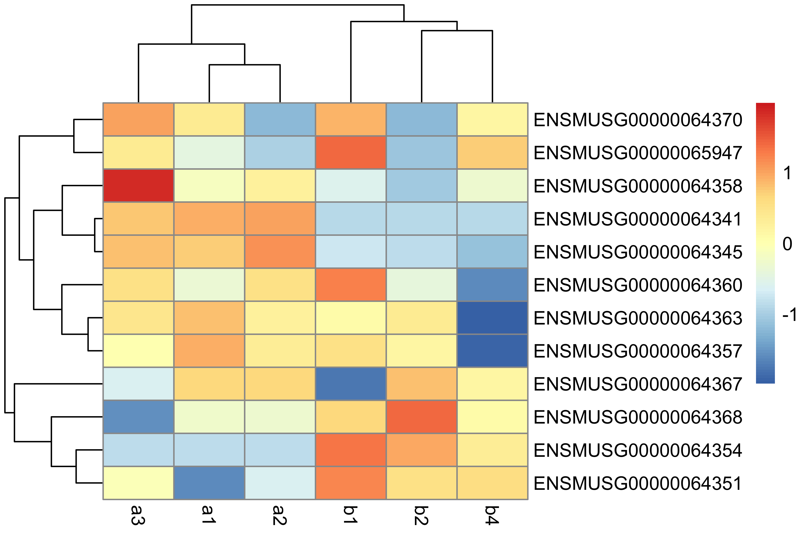

Differential Expression Inference
Once the reads have been mapped and counted, one can assess the differential expression of genes between different conditions.
During this lesson, you will learn to :
- describe the different steps of data normalization and modelling commonly used for RNA-seq data.
- detect significantly differentially-expressed genes using DESeq2.
Material
Download packages in Rstudio
The analysis of the read count data will be done on an RStudio instance, using the R language and some relevant Bioconductor libraries.
install.packages("tidyverse")
install.packages("pheatmap")
if (!requireNamespace("BiocManager", quietly = TRUE)) {
install.packages("BiocManager")
}
BiocManager::install("DESeq2")
BiocManager::install("apeglm")
BiocManager::install("clusterProfiler")
BiocManager::install("org.Mm.eg.db")
BiocManager::install("ReactomePA")
Differential Expression Inference
Let’s analyze the mouseMT toy dataset.
To help you get started, here is the code to load the reads counts into R as a count matrix:
# we skip the first line, which contains metadata
df <- read.csv("051_r_featureCounts_mouseMT.counts.extraAttributes.txt", sep = "\t", skip = 1)
head(df)
names(df)
We have gene information and count information. We need to be able to easily access our counts and rename our sample columns for easier use.
idx.num <- 14:21
sample_names <- c("a1", "a2", "a3", "a4", "b1", "b2", "b3", "b4")
cbind(names(df[idx.num]), sample_names)
colnames(df)[idx.num] <- sample_names
names(df)
DESeq2 analysis
library(DESeq2)
library(tidyverse)
library(pheatmap)
library(apeglm)
Filter low count genes.
Here, we will apply a very soft filter and keep genes with at least 1 read in at least 4 samples (size of the smallest group). We would normally keep genes with at least 10 reads in one group.
GroupSize <- 4
minReads <- 1
keep <- rowSums(df[,idx.num] >= minReads) >= GroupSize
filtered_df <- df[keep, ]
setting up the experimental design
#note: levels let's us define the reference levels
treatment <- factor( c(rep("a",4), rep("b",4)), levels=c("a", "b") )
colData <- data.frame(treatment, row.names = colnames(filtered_df)[idx.num])
colData
treatment
a1 a
a2 a
a3 a
a4 a
b1 b
b2 b
b3 b
b4 b
create matrix of counts
numM <- filtered_df[,idx.num]
rownames(numM) <- filtered_df$Geneid
creating the DESeq data object and some QC
dds <- DESeqDataSetFromMatrix(
countData = numM, colData = colData,
design = ~ treatment)
dim(dds)
We perform the estimation of dispersions
dds <- DESeq(dds)
estimating size factors
estimating dispersions
gene-wise dispersion estimates
mean-dispersion relationship
-- note: fitType='parametric', but the dispersion trend was not well captured by the
function: y = a/x + b, and a local regression fit was automatically substituted.
specify fitType='local' or 'mean' to avoid this message next time.
final dispersion estimates
fitting model and testing
PCA plot of the samples:
vsd <- varianceStabilizingTransformation(dds)
pcaData <- plotPCA(vsd, intgroup=c("treatment"))
pcaData + geom_label(aes(x=PC1,y=PC2,label=name))

OK, so a4 and b3 are quite different from the rest.
- a4 was expected from the QC
- b3 we did not expect until now
If we did the analysis with them, here is what we get:
res <- results(dds)
summary(res)
out of 13 with nonzero total read count
adjusted p-value < 0.1
LFC > 0 (up) : 0, 0%
LFC < 0 (down) : 0, 0%
outliers [1] : 6, 46%
low counts [2] : 0, 0%
(mean count < 14)
[1] see 'cooksCutoff' argument of ?results
[2] see 'independentFiltering' argument of ?results
So, let’s eliminate these two samples.
analysis without the outliers
# Start with original dataset
df_noOutliers = df[ , !( colnames(df) %in% c('a4','b3') ) ]
names(df_noOutliers)
idx.num <- 14:19
# Filter again
GroupSize <- 3
minReads <- 1
keep <- rowSums(df_noOutliers[,idx.num] >= minReads) >= GroupSize
filtered_df_noOutliers <- df_noOutliers[keep, ]
treatment <- factor( c(rep("a",3), rep("b",3)), levels=c("a", "b") )
colData <- data.frame(treatment, row.names = colnames(numM_noOutliers))
colData
numM_noOutliers <- filtered_df_noOutliers[,idx.num]
rownames(numM_noOutliers) <- filtered_df_noOutliers$Geneid
dds <- DESeqDataSetFromMatrix(
countData = numM_noOutliers, colData = colData,
design = ~ treatment)
dim(dds)
dds <- DESeq(dds)
vsd <- varianceStabilizingTransformation(dds,)
pcaData <- plotPCA(vsd, intgroup=c("treatment"))
pcaData + geom_label(aes(x=PC1,y=PC2,label=name))

It looks much better. Seems like PC1 captures the group effect
<!– We plot the estimate of the dispersions
# * black dot : raw
# * red dot : local trend
# * blue : corrected
plotDispEsts(dds)

There is so few genes that this does not look super nice here
For the Ruhland2016 dataset it looks like:

This plot is not easy to interpret. It represents the amount of dispersion at different levels of expression. It is directly linked to our ability to detect differential expression.
Here it looks about normal compared to typical bulk RNA-seq experiments : the dispersion is comparatively larger for lowly-expressed genes. –>
# extracting results for the treatment versus control contrast
res <- results(dds)
summary(res)
We can have a look at the coefficients of this model
head(coef(dds)) # the second column corresponds to the difference between the 2 conditions
Intercept treatment_b_vs_a
ENSMUSG00000064341 12.084282 -3.33601412
ENSMUSG00000064345 6.112479 -0.99101369
ENSMUSG00000064351 3.757967 0.64546475
ENSMUSG00000064354 10.209339 1.44160442
ENSMUSG00000064357 11.763707 -0.06245774
ENSMUSG00000064358 6.026334 -0.26447858
Here, it contains an intercept and a coefficient for the difference between the two groups.
Volcano Plot:
res.lfc <- lfcShrink(dds, coef=2, res=res)
FDRthreshold = 0.05
logFCthreshold = 0.5
# add a column of NAs
res.lfc$diffexpressed <- "NO"
# if log2Foldchange > 0.5 and pvalue < 0.05, set as "UP"
res.lfc$diffexpressed[res.lfc$log2FoldChange > logFCthreshold & res.lfc$padj < FDRthreshold] <- "UP"
# if log2Foldchange < 0.5 and pvalue < 0.05, set as "DOWN"
res.lfc$diffexpressed[res.lfc$log2FoldChange < -logFCthreshold & res.lfc$padj < FDRthreshold] <- "DOWN"
ggplot(data = data.frame(res.lfc) , aes(x=log2FoldChange , y = -log10(padj) , col =diffexpressed)) +
geom_point() +
geom_vline(xintercept=c(-logFCthreshold, logFCthreshold), col="red") +
geom_hline(yintercept=-log10(FDRthreshold), col="red") +
scale_color_manual(values=c("blue", "grey", "red"))
table(res.lfc$diffexpressed)
DOWN NO UP
3 9 1

Heatmap:
vsd.counts <- assay(vsd)
topVarGenes <- head(order(rowVars(vsd.counts), decreasing = TRUE), 20)
mat <- vsd.counts[ topVarGenes, ] #scaled counts of the top genes
pheatmap(mat,
scale = "row")

saving results to file
note: a CSV file can be imported into Excel
master <- cbind(filtered_df_noOutliers, res)
write.csv(master, file = "051_r_mouseMT.DESeq2.results.csv", row.names = FALSE)
From ensembl gene ids to gene names
We can convert between different gene ids using the bitr function from clusterProfiler
library(clusterProfiler)
library(org.Mm.eg.db)
allGenes <- master$Geneid
genes_universe <- bitr(allGenes, fromType = "ENSEMBL",
toType = c("ENTREZID", "SYMBOL"),
OrgDb = "org.Mm.eg.db")
genes_universe
1 ENSMUSG00000064341 17716 mt-Nd1 2 ENSMUSG00000064345 17717 mt-Nd2 3 ENSMUSG00000064351 17708 mt-Co1 4 ENSMUSG00000064354 17709 mt-Co2 5 ENSMUSG00000064356 17706 mt-Atp8 6 ENSMUSG00000064357 17705 mt-Atp6 7 ENSMUSG00000064358 17710 mt-Co3 8 ENSMUSG00000064360 17718 mt-Nd3 9 ENSMUSG00000065947 17720 mt-Nd4l 10 ENSMUSG00000064363 17719 mt-Nd4 11 ENSMUSG00000064367 17721 mt-Nd5 12 ENSMUSG00000064368 17722 mt-Nd6 13 ENSMUSG00000064370 17711 mt-Cytb ```
> Here is the list of [orgDb packages](https://bioconductor.org/packages/release/BiocViews.html#___OrgDb). For non-model organisms it will be more complex.